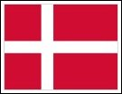

| Show 02 October 2013 |
Experience the Eurovision Song Contest with Radio International and Partners.
Please note that many interviews we air are also available as video interview which can be viewed on our Radio International YouTube Channel. Just take a look and enjoy also see the artists talking to us.
Through the Autumn 2013 with Radio International: Eurovision Radio
International never stops and is keen on
keeping the music of the Eurovision Song Contest in the ears of the many
fans that join the show each and every week via the usual means either
via PODCAST, LISTEN AGAIN, live broadcast or Live Stream. Please feel
free to submit your requests of Eurovision songs that remind you of
summer and Radio International is delighted to play your requests during
the shows. Click on CONTACT to submit your request to the programme.
 Interview with Marion Rung (Finland 1962 & 1973): At the end
of August 2013 OGAE Finland organised the Eurovision Cruise from
Helsini to Tallin with the participation of many Eurovision performers
such as Krista Siegfrids, Valentina Monetta, and Marion Rung just
to mention a few. Marion represented her native Finland at the
Eurovision Song Contest twice and thatbeing 1962 with the song "Tipi-Tii"
which came 7th and also in 1973 when she made it one place better and
reached Number 6 in the Eurovision Song Contest which was Finland's best
achievement until Lordi won the contest in 2006. Marion's entry in 1973
was "Tom Tom Tom". Radio International's rowing Skandinavian
Reporters Lilian Brunell and Roger Silfvast met the singer aboard and
chatted with her. You can hear this interview on the show this week.
You can watch this interview also on our YouTube Channel - click here Interview with Marion Rung (Finland 1962 & 1973): At the end
of August 2013 OGAE Finland organised the Eurovision Cruise from
Helsini to Tallin with the participation of many Eurovision performers
such as Krista Siegfrids, Valentina Monetta, and Marion Rung just
to mention a few. Marion represented her native Finland at the
Eurovision Song Contest twice and thatbeing 1962 with the song "Tipi-Tii"
which came 7th and also in 1973 when she made it one place better and
reached Number 6 in the Eurovision Song Contest which was Finland's best
achievement until Lordi won the contest in 2006. Marion's entry in 1973
was "Tom Tom Tom". Radio International's rowing Skandinavian
Reporters Lilian Brunell and Roger Silfvast met the singer aboard and
chatted with her. You can hear this interview on the show this week.
You can watch this interview also on our YouTube Channel - click here
 Interview with Flor de Lis's Daniela Varela (Portugal 2009): Part of the line-up at the OGAE Portugal's Eurovision Live Concert 2013 on 05 - 07 September 2013 was also the lead singer Daniela Varela of Flor de Lis who represented Portugal at the Eurovision Song Contest 2009 with the song "Todas as ruas do amor (All the streets of love)"
which came 15th in Moscow's Eurovision Grand Final. JP of Radio
International had the big pleasure to meet Daniela backstage for a quick
update interview. At this point Radio International would like to thank
Listen to this interview on this week's edition of the show.
You can watch this interview also on our YouTube Channel - click here Interview with Flor de Lis's Daniela Varela (Portugal 2009): Part of the line-up at the OGAE Portugal's Eurovision Live Concert 2013 on 05 - 07 September 2013 was also the lead singer Daniela Varela of Flor de Lis who represented Portugal at the Eurovision Song Contest 2009 with the song "Todas as ruas do amor (All the streets of love)"
which came 15th in Moscow's Eurovision Grand Final. JP of Radio
International had the big pleasure to meet Daniela backstage for a quick
update interview. At this point Radio International would like to thank
Listen to this interview on this week's edition of the show.
You can watch this interview also on our YouTube Channel - click here
 Interview with Ana Lains (Portugal National Final 2001): Another great
voice on the Thursday evening prior to Eurovision Live Concert 2013 in
Setubal, Portugal was Fado singer Ana Lains who performed in Pais de
Fado some of her greatest Fado songs. She also recorded with front man
of Culture Club - Boy George a song called "Amazing Grace". She also
competed in the national final of Portugal (Festival de Cancao) to
obtain the ticket to the Eurovision Song Contest 2001 with the song
entitled "Ha sempre alguem que nos quer". Ana will tell us all about her
career in an interview that JP and Bert did just after her performance
in Setubal. You can watch this interview also on our YouTube Channel - click here Interview with Ana Lains (Portugal National Final 2001): Another great
voice on the Thursday evening prior to Eurovision Live Concert 2013 in
Setubal, Portugal was Fado singer Ana Lains who performed in Pais de
Fado some of her greatest Fado songs. She also recorded with front man
of Culture Club - Boy George a song called "Amazing Grace". She also
competed in the national final of Portugal (Festival de Cancao) to
obtain the ticket to the Eurovision Song Contest 2001 with the song
entitled "Ha sempre alguem que nos quer". Ana will tell us all about her
career in an interview that JP and Bert did just after her performance
in Setubal. You can watch this interview also on our YouTube Channel - click here
 Interview with Birgitta Haukdal (Iceland 2003): Iceland opened up the
Eurovision Song Contest 2013 with the charming Birgitta Haukdal and the
song "Open your heart" which reached Number 8 in the Grand Final of
the Eurovision Song Contest that was staged in Riga, Latvia. In 2012
OGAE Sweden had invited Birgitta as guest to their fan convention and
OGAE Portugal followed this year and invited her for the Eurovision Live
Concert 2013. Birgitta performed her Eurovision entry from 2003 and
also her attempt for Iceland in 2013. JP and Bert had the pleasure to
meet the singer before the sound check for a little follow on interview
which you can hear on this week's edition of Radio International. You can watch this interview also on our YouTube Channel - click here Interview with Birgitta Haukdal (Iceland 2003): Iceland opened up the
Eurovision Song Contest 2013 with the charming Birgitta Haukdal and the
song "Open your heart" which reached Number 8 in the Grand Final of
the Eurovision Song Contest that was staged in Riga, Latvia. In 2012
OGAE Sweden had invited Birgitta as guest to their fan convention and
OGAE Portugal followed this year and invited her for the Eurovision Live
Concert 2013. Birgitta performed her Eurovision entry from 2003 and
also her attempt for Iceland in 2013. JP and Bert had the pleasure to
meet the singer before the sound check for a little follow on interview
which you can hear on this week's edition of Radio International. You can watch this interview also on our YouTube Channel - click here
Eurovision Song Contest Spotlight - Denmark's Eurovision Song Contest History: A
new quarter has begun which also marks the start of a new series called
"Denmark's Eurovision Song Contest History" since Denmark for the
Eurovision Song Contest 2013 and with this will be hosting the 2014
edition of the contest in Copenhagen the Team of Radio International
thought to continue the tradition to reflect on all the Danish
Eurovision entries over the years. Denmark has won the Eurovision Song
Contest three time. It was first in 1963 when Grethe and Jorgen Ingmann performed "Dansevise", then the Olson Brothers won in 2000 with the song "Fly on the wings of love" and then in 2013 with Emmelie de Forest and "Only Teardrops". This week Alasdair Rendall will launch the brand new series looking back at the Eurovision entries from Denmark.
 Eurovision UnderCover: Last week, Radio International started a brand new series on the show featuring Eurovision Cover Versions where David Mann from Eurovision Norwich
will be intoducing some of the finest Eurovision Song Contest
entries covered by other singers. Just be surprised. You will be hearing
the actual song that has been on the Eurovision stage followed by the
cover. Enjoy the brand new series. Listeners are encouraged to send in
their cover versions they came across over the years to share with the
other fans tuning into the show. Alternatively, listeners can send in
their request for a particular Eurovision covered song using this link. David Mann's been digging deep in his treasure box for this week's Eurovision Cover song. Don't miss it! Eurovision UnderCover: Last week, Radio International started a brand new series on the show featuring Eurovision Cover Versions where David Mann from Eurovision Norwich
will be intoducing some of the finest Eurovision Song Contest
entries covered by other singers. Just be surprised. You will be hearing
the actual song that has been on the Eurovision stage followed by the
cover. Enjoy the brand new series. Listeners are encouraged to send in
their cover versions they came across over the years to share with the
other fans tuning into the show. Alternatively, listeners can send in
their request for a particular Eurovision covered song using this link. David Mann's been digging deep in his treasure box for this week's Eurovision Cover song. Don't miss it!
 New Song Releases by Eurovision Artists: Radio
International is always keen to know how the careers of Eurovision
performers develop after their performance at the event. The show is in
collaboration with many Music Companies that supply Radio International
with the latest songs of their signed up artists to bring the muisc
closer to the fans. On a weekly basis Radio International receives songs
which are being featured on the show. This week: Malena Ernman New Song Releases by Eurovision Artists: Radio
International is always keen to know how the careers of Eurovision
performers develop after their performance at the event. The show is in
collaboration with many Music Companies that supply Radio International
with the latest songs of their signed up artists to bring the muisc
closer to the fans. On a weekly basis Radio International receives songs
which are being featured on the show. This week: Malena Ernman
 Eurovision Song Contest News: Luke
Fisher
joins the team in the studio every week to bring you the news
and the latest developments connected to the Eurovision Song Contest.
Whether it is music releases of Eurovision performers, special
concerts, gossip, etc Luke will have it all for us during the weekly
edition of Radio International. He also takes a look at some statistics
such as viewing figures in the various countries and more. Eurovision Song Contest News: Luke
Fisher
joins the team in the studio every week to bring you the news
and the latest developments connected to the Eurovision Song Contest.
Whether it is music releases of Eurovision performers, special
concerts, gossip, etc Luke will have it all for us during the weekly
edition of Radio International. He also takes a look at some statistics
such as viewing figures in the various countries and more.
In addition, Eurovision News is available on www.eurovision.tv, escxtra.com, esctoday.com and escflashmalta.com.
 Eurovision Song Contest Calendar of Events: Check out a detailed listing of all events scheduled around Europe. If you hear of something we have not listed please drop us a line by clicking here and
let
us know. After Eurovision is before Eurovision and to bridge the
Eurovision Gap many Eurovision Clubs will be holding their annual
convention. But also all the National Final Details are being displayed
in the Calendar. Make sure you frequently check it out. Eurovision Song Contest Calendar of Events: Check out a detailed listing of all events scheduled around Europe. If you hear of something we have not listed please drop us a line by clicking here and
let
us know. After Eurovision is before Eurovision and to bridge the
Eurovision Gap many Eurovision Clubs will be holding their annual
convention. But also all the National Final Details are being displayed
in the Calendar. Make sure you frequently check it out.
Upcoming Events - Highlights:
05 Oct 2013 (Sat) - United Kingdom/Manchester
OGAE UK's EUROBASH - Details
26 Oct 2013 (Sat) - Luxembourg/Roeser
OGAE Luxembourg Eurovision Gala - Details
23 Nov 2013 (Sat) - Germany/Köln
ECGermany's annual Clubtreffen - Details 30 Nov 2013 (Sat) - Ukraine/Kiev
11th JUNIOR EUROVISION SONG CONTEST
06 May 2013 (Tue)
Eurovision Song Contest 2014 - Semi Final 1
08 May 2013 (Tue)
Eurovision Song Contest 2014 - Semi Final 2
10 May 2013
Eurovision Song Contest 2014 - Grand Final from Denmark
 Eurovision Quiz: Scratch your heads and bite your
nails at our weekly Eurovision Song Contest Quiz. Good luck and win a
copy of a past Eurovision Song Contest Final on DVD. All you have to do
is to identify the five clips with Artist, Song, Country and Year. Send
your answers via the website's CONTACTs form. As long as stock last you can also select something out of
the Eurovision Goodies Bag. Good Luck! Congratulations go to Michael Nagelkerke from Maastricht, The Netherlands for winning the quiz from 11 September 2013. Eurovision Quiz: Scratch your heads and bite your
nails at our weekly Eurovision Song Contest Quiz. Good luck and win a
copy of a past Eurovision Song Contest Final on DVD. All you have to do
is to identify the five clips with Artist, Song, Country and Year. Send
your answers via the website's CONTACTs form. As long as stock last you can also select something out of
the Eurovision Goodies Bag. Good Luck! Congratulations go to Michael Nagelkerke from Maastricht, The Netherlands for winning the quiz from 11 September 2013.
Eurovision Music requests as well as other music requests are most welcome and can be done via our website's CONTACT US page. Let us know what you want to hear and where you are from. Due
to the large number of requests we received and cannot accommodate this
week these requests will be added to the play list for the future
shows.
|
|||||
 Radio International TV Channel with Chat Room: Radio International launched its own
Radio International TV Channel with Chat Room: Radio International launched its own  Eurovision News Website: escXtra.com: Luke Fisher is the Editor - in - Chief of Eurovision News website escXtra.com. Check our more and EXTRA news on the Eurovision Song Contest by visiting the website
Eurovision News Website: escXtra.com: Luke Fisher is the Editor - in - Chief of Eurovision News website escXtra.com. Check our more and EXTRA news on the Eurovision Song Contest by visiting the website | < Prev | Next > |
|---|